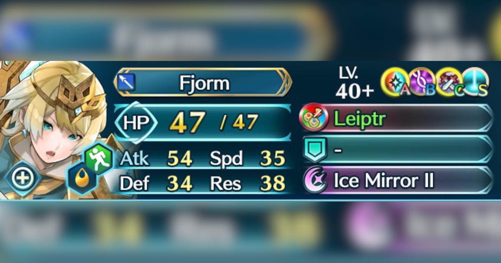

Legendary Fjorm
Author: @Eve
Editors: @Proof @Chuckles
Obtained by clearing Story, Book II, Chapter 1, Stage 5
Fjorm is a hyper focused ranged tank. Her primary playstyle revolves around soaking a hit from a ranged foe and then blasting them back with her personal special. Fjorm uses stat inflation and DR as her primary tools. Fjorm has incredibly flexible kit options, and the only specific effect she generally requires is some form of breath effect.
Fjorm comes out the gate with a full kit, as well as very strong personal skills. However, Fjorm does not scale very well in early game. Fjorm is a high invest high reward unit who sees the most use in late game pvp. While her combat ceiling is high, her cost is as well to perform in pvp.
Overall Fjorm is an incredible option for f2p players and veterans alike.
Strengths:
-Extremely high mixed bulk because of her rounded statline and weapon.
-Has prf dr that cannot be pierced.
-Has a fat counter attack because of mirror II, letting her run her dr special while not sacrificing damage.
-Penalty neutralization helps maintain her stat ball playstyle.
-Built in dc gives her very flexible a slot options to suit your needs, instead of locking her to singular effects.
-Inf status makes charging and maintaining her special easy.
-Has the bulk to live even if her special does not go off for some reason.
-Consistent bonus unit in pvp modes, boosting her effective statline on a frequent basis.
Weaknesses:
-To compete in pvp she arguably needs to have some support (precharge) built around her and some kit modifications.
-Competes in a highly competitive role with save units.
-Because her special is not every hit, the dr can be avoided in the same manner hardy fighter is dodged.
-Lack of save as a ranged tanker requires complicated support setups to stop sniping.
Desired Effects from Kit and Support:
[Followup Denial] Helps reduce damage taken by reducing hits taken. Spd stacking or :AtkSmoke4:
[Guard] Reduces damage taken by preventing specials. :ADRuse::MirrorStance3::Loki:
[Breath] to loop Ice Mirror II Looping will mean less damage taken and more damage dealt by her special. :WardingBreath::Thorr2::Ninian3:
[Dull] Creates a stat differential. :DD4::ADLull::Velouria:
[Precharge] Puts special up for Fjorm, so that she can run better/more flexible slots. :InfantryPulse::Velouria::Chrom6:
[Spiral] Keeps special up after an activation regardless of charge at end of combat. :Spiral:
[NCD] Allows fjorm to counter, dealing her damage and recharging special. :NCD:
[Feud] Having a flexible c slot allows Fjorm to run feud skills. This will reduce things like atk drives, stats, and effect drives, all of which could damage her. C feud for example helps her live precharged lethal Yuri. :CFeud:
[Deflect] Fjorm has a weakness to brave attacks, as her DR is only one hit at a time. Deflect will reduce brave attacks safely. :DeflectMagic::DeflectMissile:
[DR] Although Fjorm has Ice Mirror II, if stacking other forms of damage reduction, her base Ice Mirror can work as well. :CloseCall::SpdSmoke4:
Stat Priority Largely focus on Atk and Res, with skills like :MirrorStance3: and :WardingBreath:. However some kits are okay with alternate skills like :KestrelStance3: :ASSolo:
